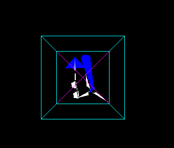
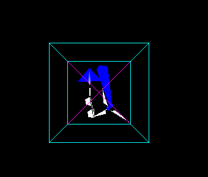

Graphics Assignment 2
Sashank Gondala
Sai Charan
- Implemented all the transformations along the model-viewing pipeline
- First image consists of a scene consisting of models of paperplane, spectacles, windmill and the frustum centered eye (at specified coordinates), all of which is viewed from a second orthographic plane (WCS)
- Rotation and translation in this scene across second orthographic plane is enabled, to a better understanding of the object locations
- Second scenario, consists of the above scene (in wcs) as viewed from the eye location as an orthographic projection(VCS)
- Third, the above scene is subjected to perspective transformation with eye the point of projection(CCS)
- Fourth, the obtained 4d- coordinates are cut down to 3-dimensions by division of first three coordinates of each vertex by the fourth coordinate, which is essentially marking reducing the image to 3d coordinates, a projection of which was presented(NDCS)
- Lastly, the above obtained ndcs coordinates are fitted in order to cover up the screen of the device (which in our case, we found the limits by trial and error, each time managing the scene to remain inside the window (DCS)
 
